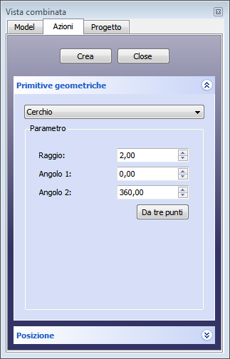

|
| Posizione nel menu |
|---|
| Parte → Crea primitive → Cerchio |
| Ambiente |
| Parte, OpenSCAD |
| Avvio veloce |
| Nessuno |
| Vedere anche |
| .. |
Dal dialogo Crea Primitive de'ambiente Parte è disponibile un cerchio geometrico primitivo .
Il dialogo Crea Primitive è accessibile tramite l'icona Crea Primitive  del menu Part o della barra degli Strumenti Part, dell'ambiente Part.
del menu Part o della barra degli Strumenti Part, dell'ambiente Part.
Questo comando crea un bordo curvo circolare. Con i valori di default, il bordo curvo circolare è chiuso e quindi è un cerchio. Se vengono modificate i valori predefiniti (0 e 360) delle proprietà Angolo 0 o Angolo 1, il bordo è una curva aperta, un arco.
In alternativa, un cerchio Part può essere inizialmente definito da tre punti. Una volta creato esso contiene solo le proprietà standard dei cerchi Part e non è più riferito ai punti di creazione.
Crea un cerchio o un settore di cerchio parametrico.
Utilizzare il menu  Crea primitive... → Cerchio. Si apre una finestra di dialogo che consente di impostare:
Crea primitive... → Cerchio. Si apre una finestra di dialogo che consente di impostare:
Primitive Geometriche
|  |
Cerchio Parametri
PosizioneEspandere la voce Posizione per stabilire:
I parametri e il posizionamento sono modificabili tramite la scheda delle proprietà. |
{kind=link}
- Radius: il raggio del bordo curvo (arco o cerchio)
- Angle 0: inizio del bordo curvo, (gradi in senso antiorario), il valore di default è 0
- Angle 1: fine del bordo curvo (gradi in senso antiorario), il valore di default è 360